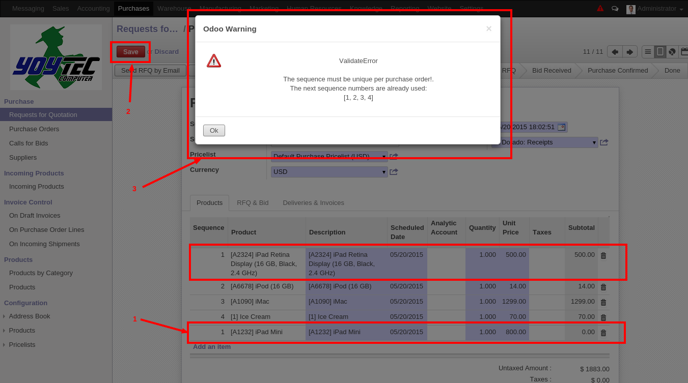

Features
This sequence is a incremental positive number greater or equal to 1. It increments one by one. You can also change the generate sequence number by hand to set the sequence number you want. After you save the purchase order lines will be re-ordered with the sequence value given.


Also the sequence field is validate to be unique per purchase order so the sequence number to identificate lines can not be repeat into the lines of a purchase order.